Premessa
L’Italia è tra i Paesi europei con il tasso di NEET più alto, e lo è da vent’anni. La sigla indica i giovani che non hanno un lavoro, non studiano e non seguono corsi di formazione. La media nazionale, in questi anni, si aggira intorno al 14-15% della popolazione tra i 15 e i 29 anni, ma è una cifra che spiega poco: lo stesso fenomeno prende forme molto diverse da una regione all’altra e risponde a cause diverse. Questa analisi prova a distinguerle, servendosi di due insiemi di dati pubblici: le statistiche di Eurostat sul mercato del lavoro regionale e le previsioni occupazionali del sistema Excelsior, curato da Unioncamere insieme al Ministero del Lavoro.
Da questa lettura emerge che in Italia convivono due problemi. Nel Sud i giovani restano fuori dal lavoro soprattutto perché il lavoro scarseggia. Al Centro-Nord, dove il lavoro c’è, le imprese faticano a trovare personale tecnico. Sono due situazioni che vanno in direzioni opposte e che difficilmente si affrontano con gli stessi strumenti.
1. Chi sono i NEET
Un anno passato senza lavorare, senza studiare e senza formarsi non è soltanto un anno senza stipendio. È tempo in cui non si accumulano esperienza, contatti e competenze, e più a lungo dura, più diventa difficile rientrare. Per questo il tasso di NEET è considerato uno degli indicatori più eloquenti dello stato di un mercato del lavoro e di un sistema formativo.
In Italia il fenomeno ha una geografia molto netta e una composizione interna che merita di essere guardata da vicino. Le pagine che seguono ricostruiscono prima il quadro territoriale, poi quello delle competenze richieste dalle imprese.
2. Le fonti
La prima è Eurostat, l’ufficio statistico dell’Unione Europea. Da lì provengono il tasso di NEET per età e sesso, la disoccupazione e l’occupazione per titolo di studio, il tasso di attività e il prodotto pro capite delle regioni italiane, con serie che partono dal 2000.
La seconda è Excelsior, il sistema di previsione dei fabbisogni occupazionali delle imprese. Ogni anno le aziende italiane dichiarano quante persone intendono assumere, per quale figura professionale, con quale titolo di studio e con quanta difficoltà. I dati sono diffusi per provincia; qui si utilizza l’ultimo bollettino disponibile, relativo al trimestre luglio-settembre 2026.
Le due fonti lavorano a livelli geografici differenti, e la scelta non è arbitraria. Il NEET è calcolato su un campione di famiglie: regge a livello regionale, mentre scendere alla singola provincia significherebbe lavorare su numeri troppo fragili. Le previsioni di Excelsior, invece, riguardano le imprese e sono disponibili nativamente per provincia. Per confrontare i due mondi, le province vengono ricomposte nelle rispettive regioni.
3. Il quadro del NEET
3.1 Un divario che non si chiude
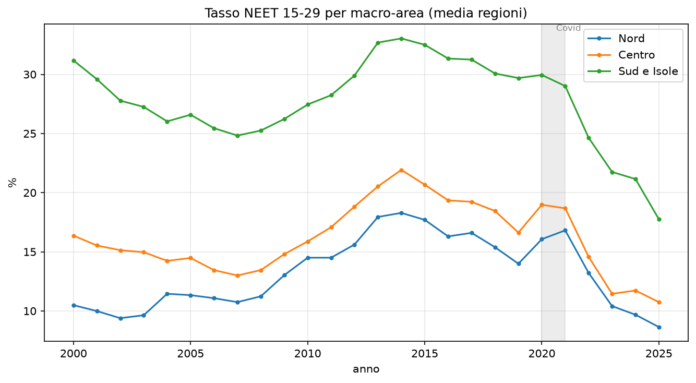
La media nazionale ha seguito una curva a gobba. È salita fino al 24,6% nel 2014, è scesa al 20,5% nel 2019, ha avuto un rimbalzo nel 2020 e nel 2021 per effetto della pandemia, ed è poi calata fino al 14,4% nel 2024. Il calo degli ultimi anni è consistente e riguarda tutto il Paese.
Le tre ripartizioni, però, si sono mosse quasi in parallelo, mantenendo le distanze. Il Sud è rimasto costantemente oltre i dieci punti sopra il Nord, come se il divario avesse un livello minimo che non scende.
| Anno | Nord | Centro | Sud e Isole |
|---|---|---|---|
| 2004 | 11,4% | 14,2% | 26,0% |
| 2014 | 18,3% | 21,9% | 33,0% |
| 2019 | 14,0% | 16,6% | 29,7% |
| 2024 | 9,7% | 11,7% | 21,2% |
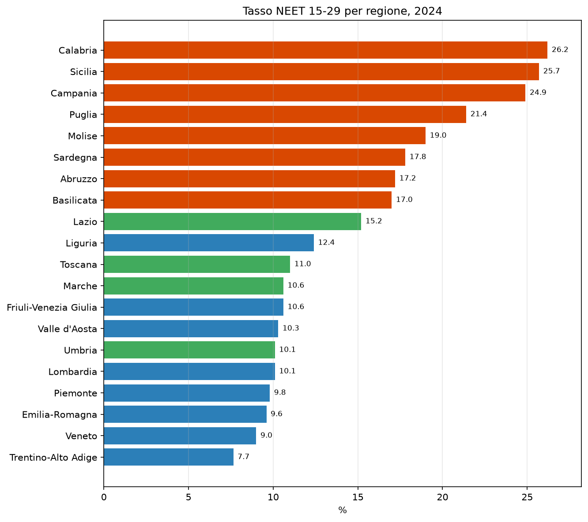
La classifica regionale del 2024 non lascia zone intermedie. In testa ci sono Calabria (26,2%), Sicilia (25,7%), Campania (24,9%) e Puglia (21,4%). In fondo troviamo Trentino-Alto Adige (7,7%), Veneto (9,0%) ed Emilia-Romagna (9,6%). Nessuna regione settentrionale arriva al 12,5%; nessuna meridionale scende sotto il 17%. Le due Italie, su questo indicatore, non si toccano.
3.2 Titoli di studio e mercato del lavoro
Viene spontaneo attribuire il ritardo del Sud all’istruzione: pochi laureati, molti giovani usciti presto dal sistema scolastico. I numeri raccontano un’altra storia.
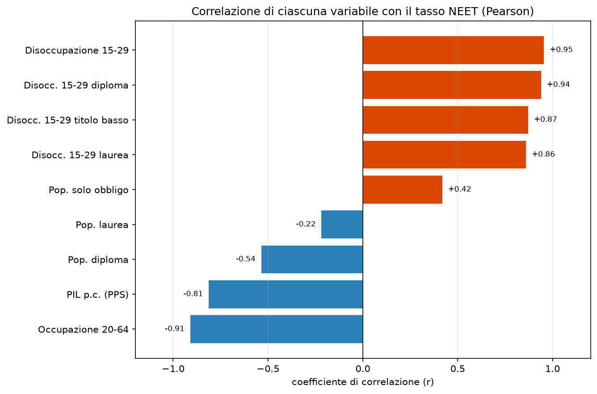
La quota di popolazione laureata ha un legame molto debole con il tasso di NEET. Le variabili che invece procedono insieme al fenomeno sono quelle del mercato del lavoro: la disoccupazione giovanile viaggia quasi in perfetta sintonia con il NEET, l’occupazione in senso opposto, e anche il reddito pro capite segue lo stesso andamento. In pratica, il livello di NEET di una regione dipende soprattutto da quanto lavoro c’è, più che dal numero di diplomi e lauree posseduti. È una conclusione scomoda, perché sposta l’attenzione dalla scuola alle opportunità economiche del territorio.
3.3 Disoccupati e inattivi
NEET è un’etichetta che raccoglie situazioni diverse. Eurostat distingue chi cerca attivamente lavoro da chi si è ritirato dalla ricerca, restando inattivo.
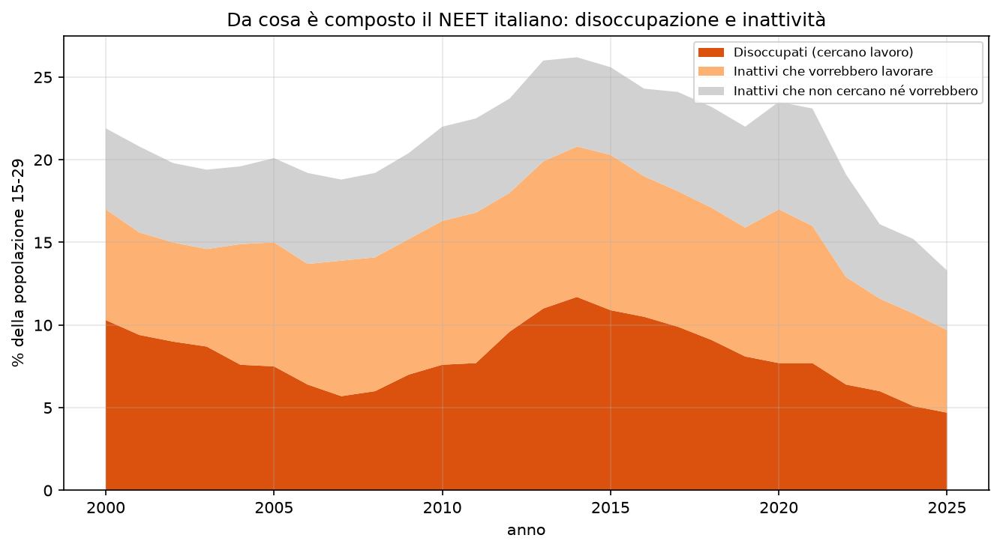
Nel 2024 la maggior parte dei NEET, circa sette su dieci, un lavoro lo cercava o lo avrebbe voluto. Sono disoccupati oppure inattivi che, davanti a un’occasione concreta, tornerebbero a cercare. La quota di chi dichiara di non cercare né desiderare un impiego è minoritaria e si è ridotta rispetto al 2019. Questa scomposizione invita a leggere il fenomeno con più cautela di quanto faccia il discorso pubblico: la disponibilità a lavorare, tra i giovani che risultano inattivi, c’è, e in misura larga.
3.4 Genere e partecipazione femminile
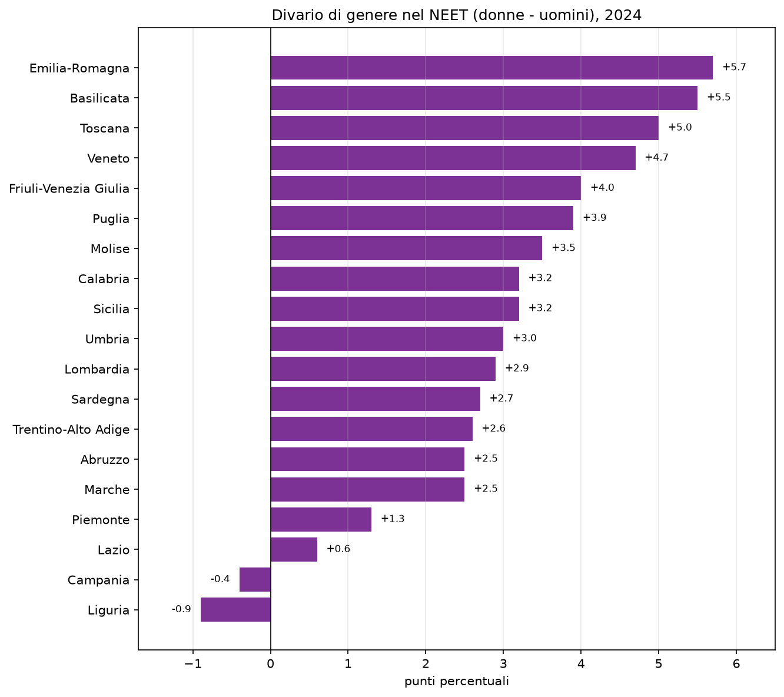
A livello nazionale il tasso di NEET delle donne supera quello degli uomini di quasi tre punti. La differenza cambia però molto sul territorio. È ampia in Emilia-Romagna, in Basilicata e in Toscana, dove sfiora o supera i cinque punti, e diventa negativa in Campania e in Liguria, dove sono gli uomini a essere più esposti. Nel Sud la disoccupazione maschile è così alta da rendere il divario di genere, su questo indicatore, meno visibile.
Il dato che pesa di più, dal punto di vista strutturale, riguarda la partecipazione delle donne al mercato del lavoro.
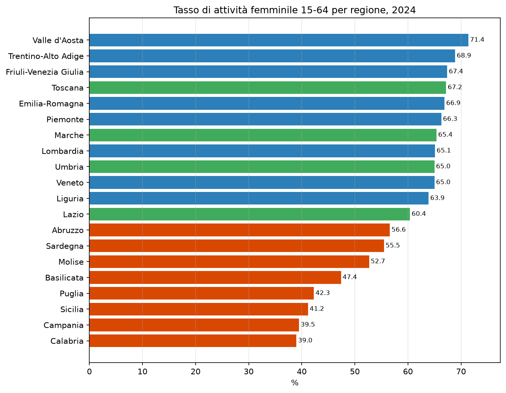
Il tasso di attività femminile va dal 39% della Calabria e dal 39,5% della Campania al 71,4% della Valle d’Aosta. La distanza tra Nord e Sud supera i venticinque punti ed è più ampia di quella misurata sui NEET.
3.5 Prevedere il rischio
Se si conoscono le condizioni economiche di una regione, se ne può prevedere il tasso di NEET dell’anno successivo con ragionevole precisione. Un modello statistico costruito su disoccupazione, occupazione, istruzione e reddito spiega circa il 65% delle differenze tra regioni e anni, con un errore medio di circa tre punti percentuali. Ripetere la media storica avrebbe prodotto un errore di oltre sette punti.
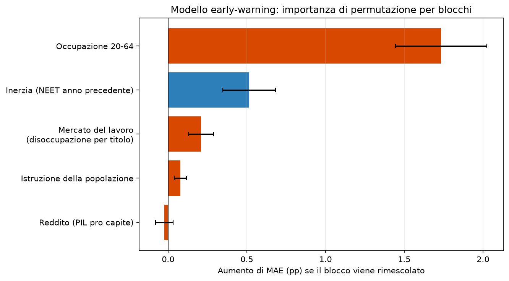
Il tasso di occupazione è la variabile più informativa. Una volta noto, le altre aggiungono poco, perché l’informazione che portano è in buona parte già contenuta in esso. Il modello, va detto, non contiene alcuna etichetta di regione: il divario Nord-Sud compare da solo, come conseguenza di occupazione, disoccupazione e reddito.
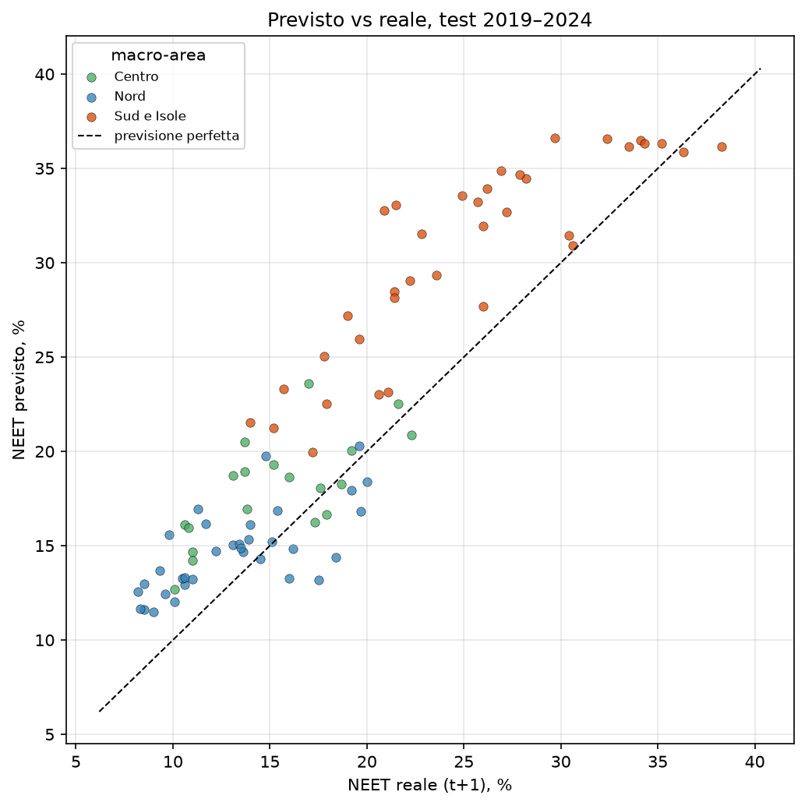
La verifica è stata fatta solo su anni successivi a quelli usati per l’addestramento, dal 2019 al 2024, e mai su dati già visti. È la sola prova onesta quando si vuole capire se un modello serve davvero a prevedere.
4. Le imprese e le competenze
4.1 Quanto è difficile trovare personale
Passiamo al lato delle imprese. Secondo Excelsior, delle 568.000 assunzioni programmate per il trimestre luglio-settembre 2026, il 42,6% è giudicato di difficile reperimento. La difficoltà cresce con la specializzazione richiesta.
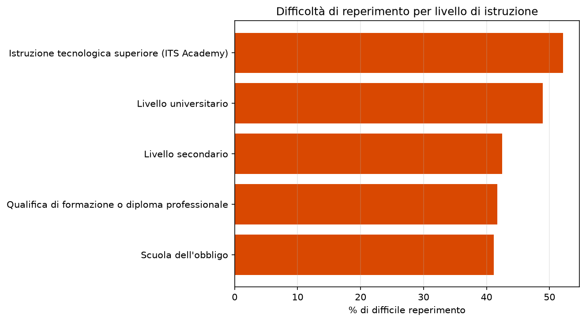
Le posizioni più numerose riguardano la ristorazione, il turismo e l’amministrazione. Quelle più difficili da coprire sono invece tutte tecniche: produzione e manutenzione industriale, con il 69% di difficile reperimento, elettrico (63%), meccanico (61%), elettronica (60%) e ambito sanitario (59%).
4.2 Cercasi candidati
Excelsior consente di distinguere due cause della difficoltà. Un’impresa può non ricevere nessun candidato, oppure riceverne di non adeguatamente preparati. La prima è una questione di quantità, la seconda di qualità, ed è la seconda a costituire il disallineamento vero e proprio tra formazione e lavoro.
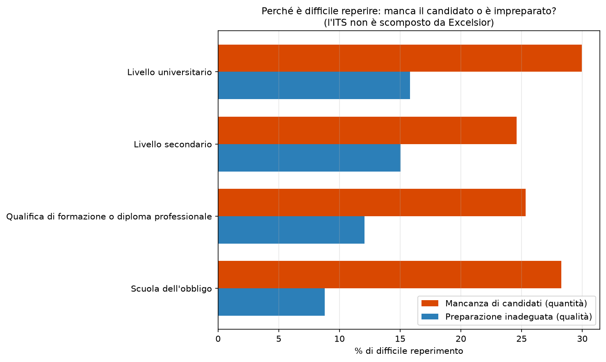
Le assunzioni difficili per mancanza di candidati sono il 26,2%, quelle difficili per preparazione inadeguata il 12,6%. La prima causa vale circa il doppio della seconda, e la prevalenza si ritrova a tutti i livelli di istruzione. Il nodo, quindi, riguarda soprattutto il numero di persone disponibili nei profili richiesti, prima ancora della loro preparazione.
4.3 Due geografie opposte
Mettendo a confronto le previsioni delle imprese con i tassi regionali di NEET si arriva al risultato più interessante dell’analisi.
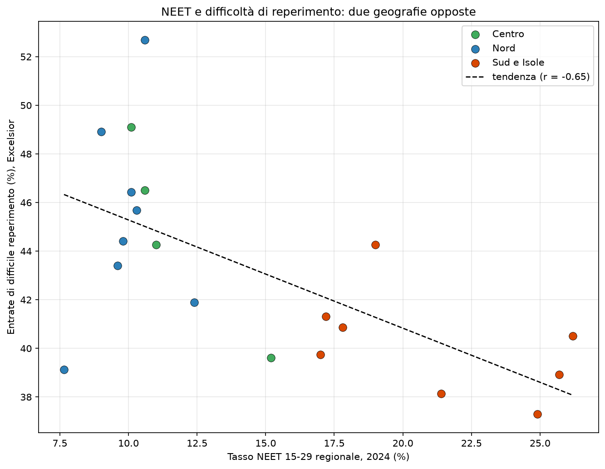
Dove il NEET è alto, cioè nel Sud, le imprese dichiarano meno difficoltà a trovare personale. Dove il NEET è basso, al Centro-Nord, ne dichiarano di più. La relazione è inversa e piuttosto marcata, e a sostenerla è soprattutto la mancanza di candidati. La spiegazione sta nella natura diversa dei due mercati del lavoro: al Sud la domanda è più debole e meno qualificata, per cui tecnicamente mancano meno persone; al Nord la domanda è sostenuta e a scarseggiare sono i profili tecnici.
5. Tre questioni diverse
Quello che chiamiamo il problema dei giovani e del lavoro in Italia è, a ben guardare, la sovrapposizione di tre questioni con cause e rimedi differenti.
La prima è la debolezza della domanda di lavoro nel Sud. Qui i NEET sono numerosi perché il lavoro è poco, e la chiave sta nella crescita e nelle opportunità economiche.
La seconda è la bassa partecipazione femminile. In Calabria e in Campania meno del 40% delle donne in età lavorativa è nel mercato del lavoro, e questa assenza alimenta il bacino dei NEET.
La terza è la carenza di profili tecnici al Centro-Nord. In queste regioni i NEET sono pochi, ma le imprese non trovano meccanici, elettricisti, tecnici sanitari e diplomati degli ITS.
A tenere insieme le tre questioni è l’istruzione tecnico-professionale: al Sud manca come sbocco occupazionale, al Nord come serbatoio di candidati.
6. Qualche indicazione
Nel Sud la priorità sembra stare nella creazione di lavoro e nell’allargamento della partecipazione, soprattutto femminile, con investimenti, politiche attive e servizi di cura. Al Centro-Nord la leva più promettente è l’offerta formativa tecnica: rafforzare gli ITS, orientare presto verso i mestieri tecnici, stringere legami stabili tra scuole e imprese. In tutto il Paese servono poi politiche di incontro tra domanda e offerta, dai servizi per l’impiego all’apprendistato, e un monitoraggio continuo, basato su dati come questi, per capire se gli interventi funzionano.
7. Limiti
Il tasso di NEET è una stima campionaria. È affidabile a livello regionale, lo è meno per le regioni più piccole, e non va usato per conclusioni sulla singola provincia.
Le previsioni di Excelsior misurano intenzioni dichiarate dalle imprese, non assunzioni avvenute. Tendono a sovrastimare e non coprono l’intera economia; la difficoltà di reperimento è una percezione delle aziende.
Il quadro sulle competenze si riferisce a un solo trimestre e serve a descrivere una situazione, non a mostrare una tendenza. I dati provinciali delle imprese seguono inoltre una ripartizione amministrativa storica, di 105 province, leggermente diversa da quella attuale.
Infine, le relazioni qui presentate sono associative. Che due fenomeni si muovano insieme non dimostra che uno determini l’altro.
Fonti
Eurostat, per il tasso di NEET regionale, la disoccupazione e l’occupazione per titolo di studio, il tasso di attività e il prodotto pro capite (https://ec.europa.eu/eurostat).
Sistema Informativo Excelsior, Unioncamere e Ministero del Lavoro e delle Politiche Sociali, per le previsioni dei fabbisogni occupazionali delle imprese (https://excelsior.unioncamere.net).